Etyka i rzetelność
Kręgosłup firmy. Uczciwe prowadzenie działalności i wywiązywanie się z obowiązków wobec państwa, kontrahentów i pracowników.
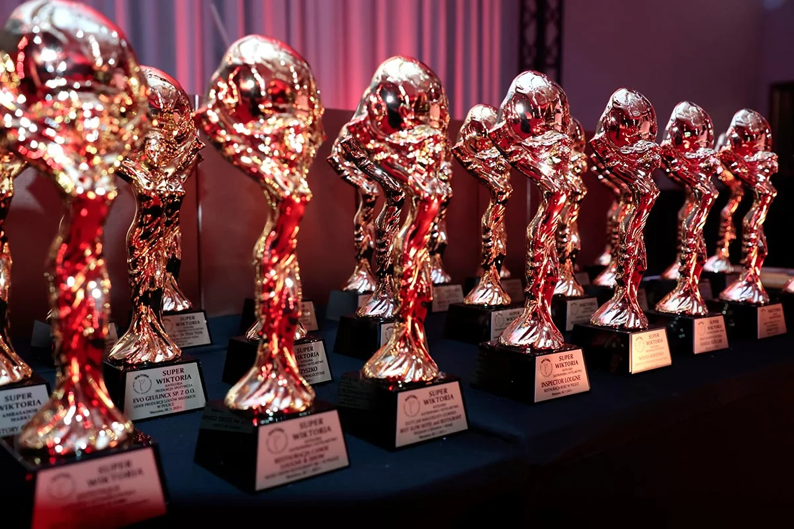
Zgłoszenia do XXX edycji przyjmujemy od 4 stycznia do 31 lipca 2027
Ogólnopolski konkurs gospodarczy, który od prawie 30 lat nagradza firmy prowadzone uczciwie, polecane przez klientów i zaangażowane społecznie. Zgłoszenie do konkursu jest bezpłatne.
Zgłoś firmę do konkursuBiuro konkursutel. 22 897 67 47biuro_promocji@nagrodawiktoria.pl
Postać w znaku WIKTORII powstała z trzech ruchów pędzla. Tak samo trzy rzeczy sprawdza Kapituła, zanim przyzna statuetkę.
Kręgosłup firmy. Uczciwe prowadzenie działalności i wywiązywanie się z obowiązków wobec państwa, kontrahentów i pracowników.
Ręka podana innym. Kim firma może się pochwalić, jak mówią o niej klienci i partnerzy, kto ją poleca.
Społeczna odpowiedzialność biznesu. Co firma robi dla ludzi i regionu, w którym działa, poza samym zarabianiem.
W dotychczasowych edycjach wzięło udział blisko 14 tysięcy firm, a ponad 1100 zostało laureatami. Organizatorem konkursu jest Fundacja WIP Warto Im Pomóc.
W 2027 roku odbędzie się XXX, jubileuszowa edycja konkursu. Wśród laureatów minionych lat są firmy znane w całej Polsce. Kilka przystanków z archiwum WIKTORII:
Wśród nagrodzonych prezes Drutex S.A. Leszek Gierszewski.
Laureatem zostaje WIŚNIOWSKI, producent bram garażowych i przemysłowych.
Statuetki dla OKNOPLAST, Grupy Azoty Zakłady Azotowe Kędzierzyn, Balton i Radia ZET.
Spółdzielnia Pracy Muszynianka nagrodzona jako lider rynku wody mineralnej w Polsce.
Jubileuszowa, 25. edycja. Nagrody rozdane 15 października.
36 nowych laureatów, Gala w Airport Hotel Okęcie, Europejska Nagroda WIKTORIA dla Muszynianki.
Wielka Gala 7 listopada w Warszawie, patronat honorowy Wojewody Mazowieckiego.
Jubileusz 30-lecia. Zgłoszenia od 4 stycznia do 31 lipca 2027, Wielka Jubileuszowa Gala 30 października 2027.
Zgłoś firmęStatuetki wręczono 8 listopada 2025 na Wielkiej Gali w Airport Hotel Okęcie w Warszawie.
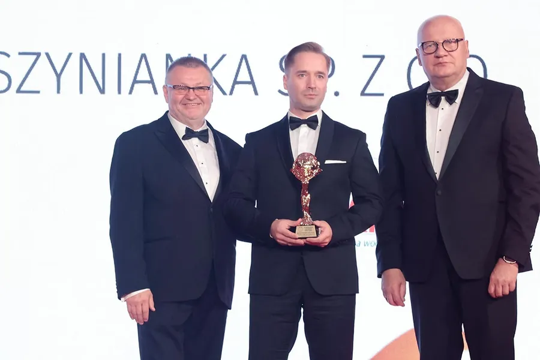
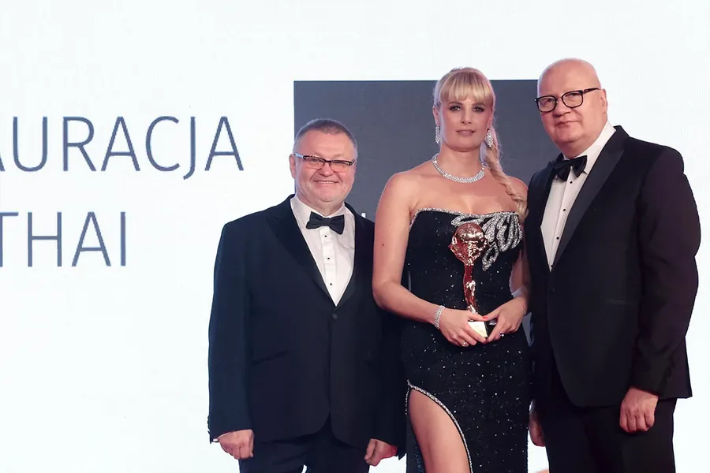
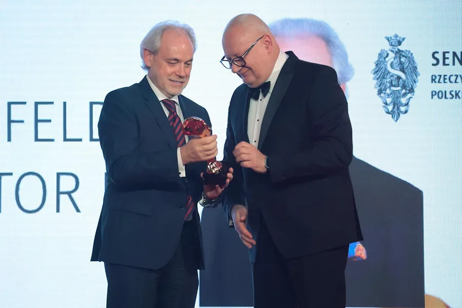
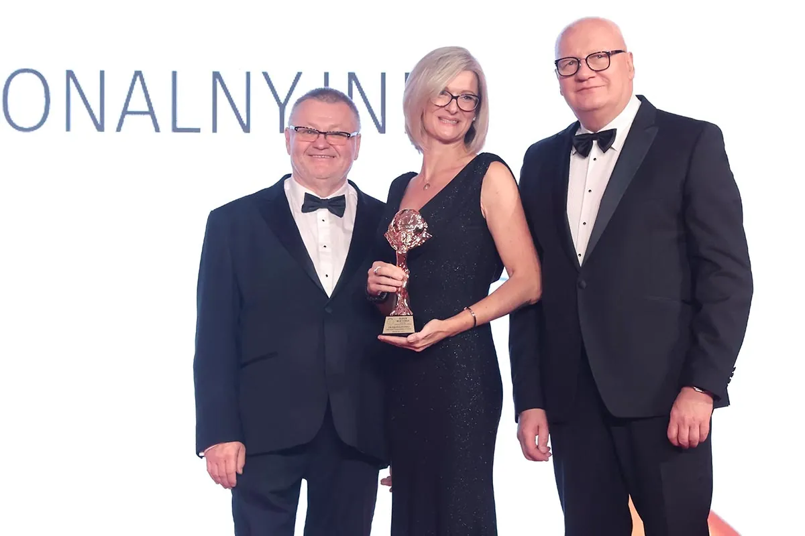
Nagroda im. Wokulskiego: Peter Grudniak, E-Pro Polska
Super Wiktoria za zasługi dla polskiej przedsiębiorczości: Adam Szejnfeld, Aleksandra Łukomska-Smulska
Literacka Nagroda WIKTORIA: Katarzyna Stoparczyk
Nagroda z okazji 35-lecia: Radio ZET
Newell Brands Inc
Ceramic Pro Poland
Muszynianka Sp. z o.o.
Europejska Osobowość Roku: Ireneusz Cichoński, Intermarché
Restauracja Canoe Lounge & Show
Restauracja Kuźnia Smaków Kopalni Złota
Złoty Jar Małgorzata Szumska
Hotel Szyszko
Restauracja Thai Thai
Inspector Lounge, Inspector Gastro Group
Gotujemy.pl Sp. z o.o.
Wesoła Rodzinka
Evo Geulincx Sp. z o.o.
Bukat Sp. z o.o.
Prywatna Poradnia Chirurgiczna Vitabene
KSZ Team
Hamsa Skin Lab
Centrum Stylizacji Magdalena Rudnik
Geralt Polska (Newby Teas)
Jubiler Agnieszka Celmer
Pałac Zamoyskich, Okazjonalny.info
Fundacja Ekon, Grupa Redconst
Firmy nagrodzone statuetką WIKTORII na Wielkiej Gali 7 listopada 2026, ze zdjęciami z wręczenia. Lista pojawi się po przekazaniu materiałów przez Fundację.
Firmy, które dotarły do finału XXIX edycji. Osobna lista, oddzielona od laureatów.
Co dzieje się w konkursie: patronaty, terminy, obrady Kapituły i wyniki.
Miejsce na relację z tegorocznej Gali, listę laureatów XXIX edycji, zdjęcia i film. Treść uzupełnimy materiałami od Fundacji.
Patronat honorowy nad tegoroczną edycją konkursu WIKTORIA Znak Jakości Przedsiębiorców objął Wojewoda Mazowiecki Mariusz Frankowski.
Do konkursu można zgłosić się przez formularz na stronie. Po sprawdzeniu wiarygodności firmy organizator przesyła komplet dokumentów. Firmy są nominowane w kategoriach od budownictwa, energetyki i przemysłu po turystykę, gastronomię, finanse i naukę.
Wśród nagrodzonych są m.in. Muszynianka (Europejska Nagroda WIKTORIA), Radio ZET (nagroda z okazji 35-lecia) i Peter Grudniak z E-Pro Polska (Nagroda im. Wokulskiego).
Startować mogą firmy z siedzibą i rejestracją w Polsce, zarejestrowane co najmniej rok przed ogłoszeniem edycji. Europejskie Nagrody WIKTORIA są dla firm, które działają także za granicą.
Zgłoszenia do XXX edycji przyjmujemy od 4 stycznia do 31 lipca 2027. Materiały konkursowe należy przesłać do 4 września 2027.
Kilka danych wystarczy na początek. Zgłoszenia przyjmujemy od 4 stycznia do 31 lipca 2027. Po weryfikacji organizator przesyła firmie komplet dokumentów do uczestnictwa, w tym formularz zgłoszeniowy.
To formularz pokazowy w projekcie strony, nic nie zostanie wysłane.
Laureatów wybierają przedsiębiorcy, naukowcy i przedstawiciele samorządu. Skład z 2025 roku:
Etyka i rzetelność w biznesie to nie może być temat wykładu akademickiego, ale codzienna praktyka życia gospodarczego.
Wielka Jubileuszowa XXX Gala Wiktorii odbędzie się 30 października 2027. Poniżej kadry z Gali 2025, na której ogłoszono wyniki XXVIII edycji. Zdjęcia z Gali 2026 dodamy, gdy tylko je otrzymamy. Galerie z wcześniejszych edycji są w Archiwum.
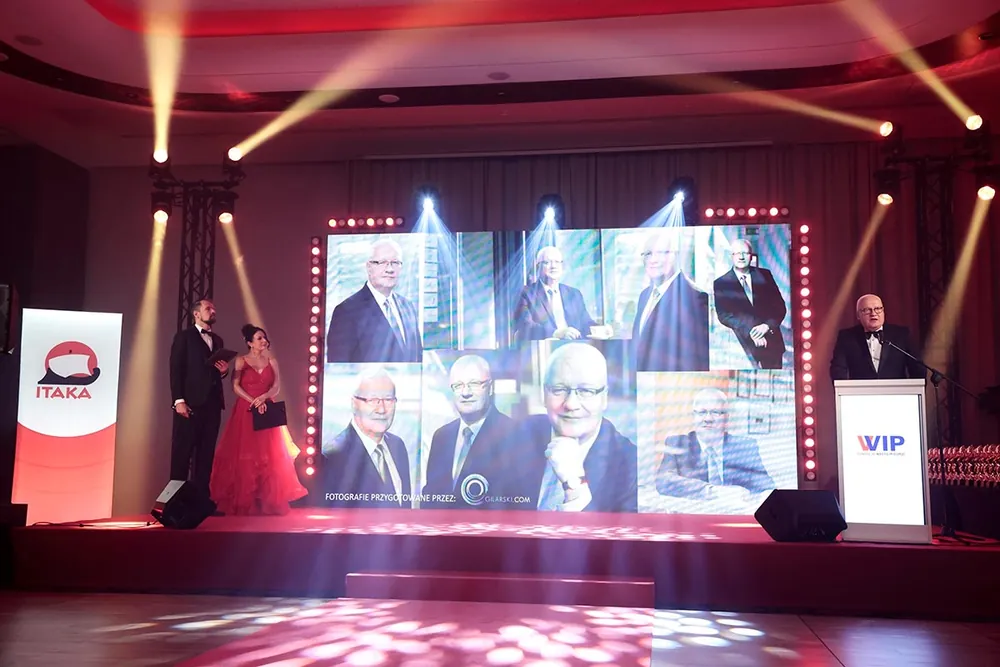
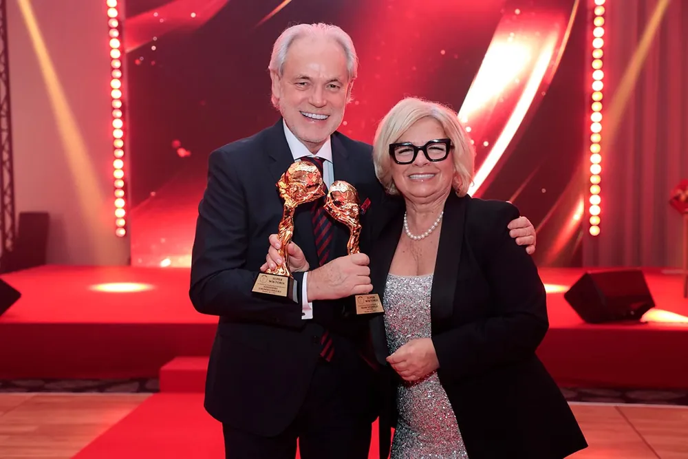
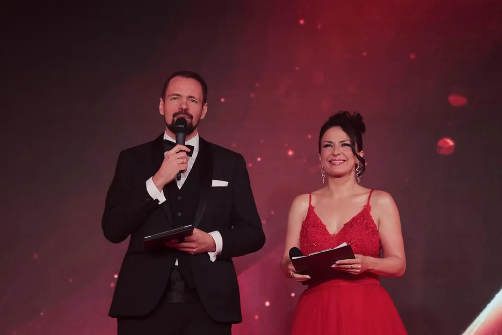
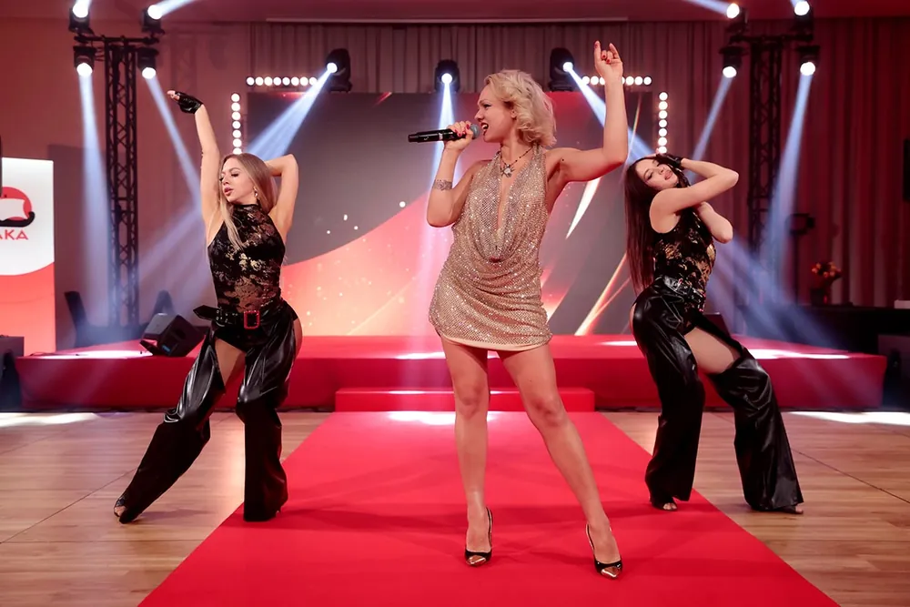
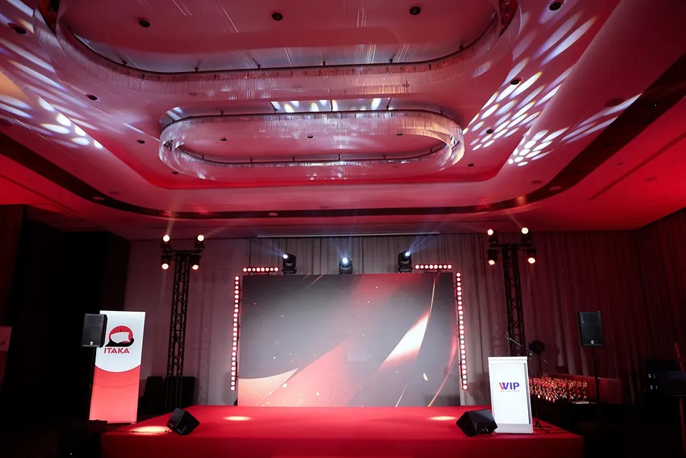
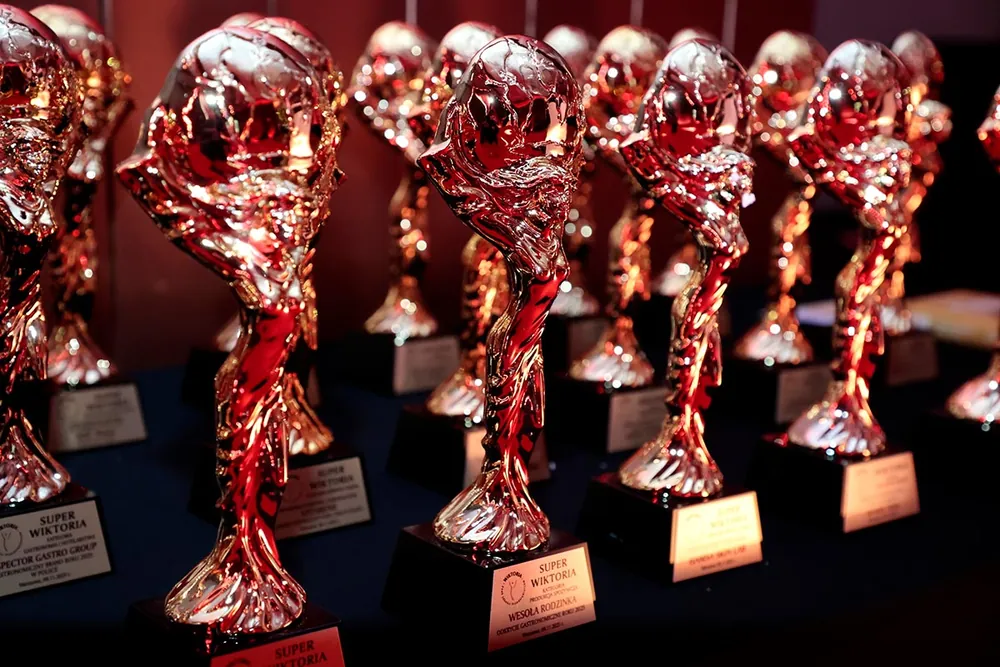
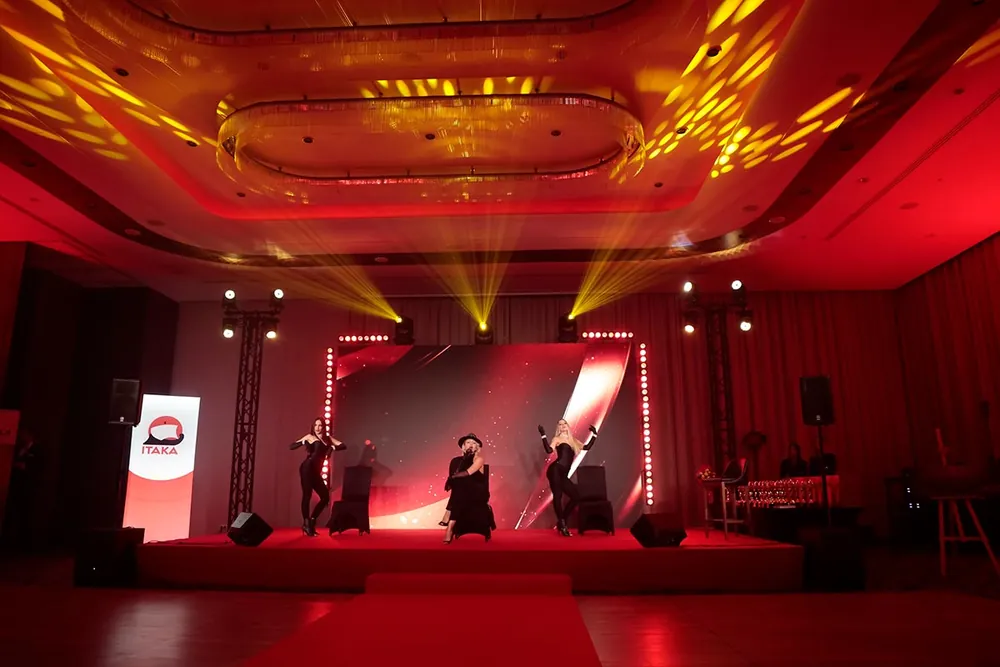
Relacje z kolejnych Gal. Film uruchamia się dopiero po kliknięciu.
Nie ma tu odpowiedzi? Biuro konkursu: 22 897 67 47.
Zgłoszenie do konkursu jest bezpłatne. Po weryfikacji organizator przesyła firmie komplet dokumentów do uczestnictwa, w tym formularz zgłoszeniowy.
Zgłoszenia do XXX edycji przyjmujemy od 4 stycznia do 31 lipca 2027. Materiały konkursowe należy przesłać do 4 września 2027. Wielka Jubileuszowa XXX Gala Wiktorii odbędzie się 30 października 2027.
Firma zgłasza się sama przez stronę konkursu. Organizator może też sam nominować firmy. Warunek: siedziba w Polsce i rejestracja co najmniej rok przed ogłoszeniem edycji.
W trzech filarach: etyka i rzetelność wobec państwa, kontakty i rekomendacje oraz serce, czyli społeczna odpowiedzialność biznesu. Lista laureatów ogłoszona przez Kapitułę jest ostateczna.
To nagroda specjalna, o której przyznaniu decyduje Przewodniczący Kapituły Konkursu.
Dożywotnio, zawsze z podaniem roku otrzymania nagrody: na papierze firmowym, w reklamach, materiałach informacyjnych i na targach.
To firmy i osoby, które popularyzują cele konkursu i należą do Klubu Ambasadorów. Najwyższy status, Koronę Ambasadorską, ma Sita Sp. z o.o. ze Szczytna.
Firmy, urzędy i media, które wspierają konkurs. Lista z XXVIII edycji 2025, patronat honorowy z 2026 roku.

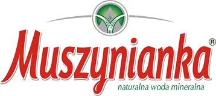
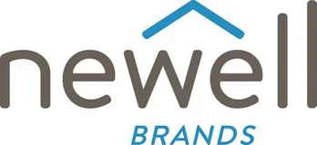

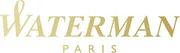

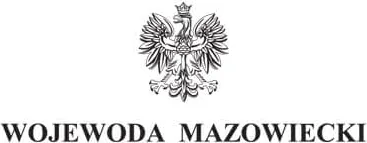


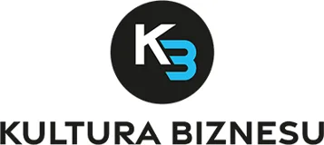
Siedziba Kapituły KonkursuFundacja WIP Warto Im Pomóc
ul. Kochanowskiego 31 m41
01-864 Warszawa
tel. 22 897 67 47biuro_promocji@nagrodawiktoria.pl
Dla firm nominowanych, partnerów i mediów: Waldemar Piórek, Prezes Zarządu Fundacji WIP, organizator konkursu.